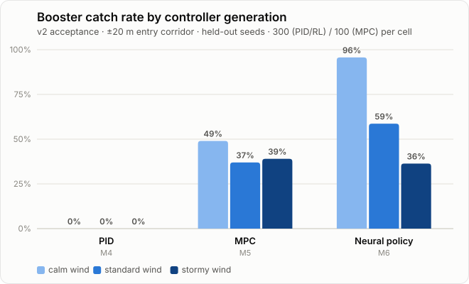

Open-source · 6-DOF · in your browser
Starship Catch
Simulator
No single controller wins.
PID → convex MPC → an imitation-learned neural policy, on one physics core — scored on a held-out, domain-randomized catch benchmark.
dionismuzenitov.github.io/starship-catch-sim
